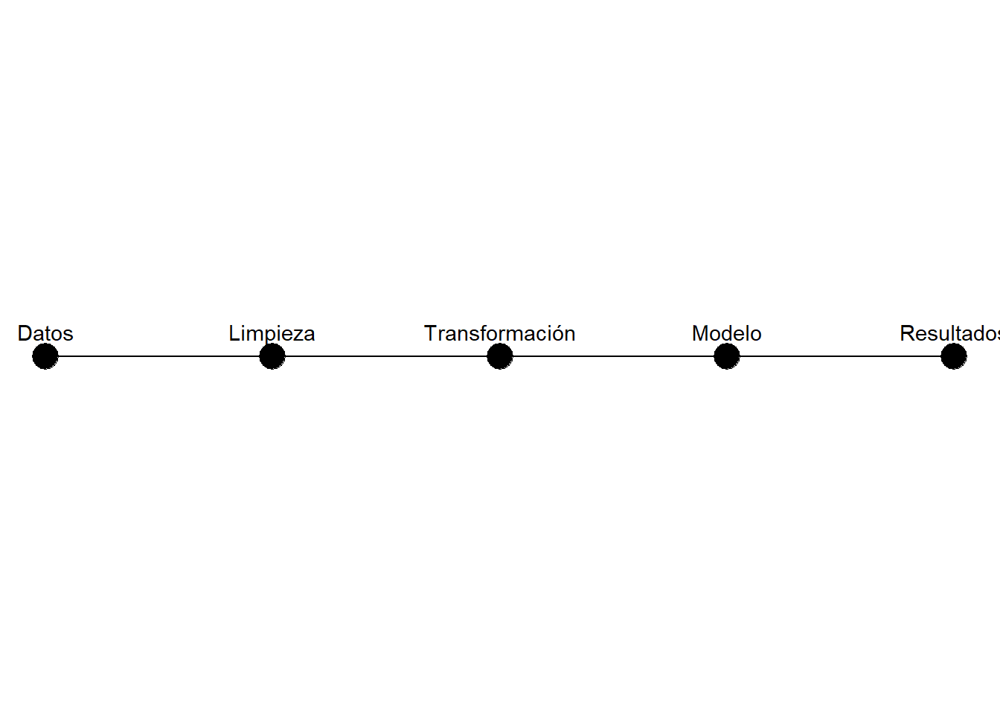

library(tidyverse)
library(gapminder)
library(knitr)
library(here)32 Metodología
Objetivos de aprendizaje
Al finalizar este capítulo, el lector será capaz de:
- Comprender la función de la metodología dentro de un documento científico.
- Identificar los componentes esenciales de una sección metodológica.
- Documentar fuentes de datos, variables y procedimientos analíticos.
- Integrar código reproducible dentro de Quarto.
- Redactar metodologías transparentes y replicables.
32.1 Introducción
La metodología describe cómo se desarrolló la investigación. Su propósito es permitir que otros investigadores comprendan, evalúen y reproduzcan el proceso seguido para obtener los resultados (Creswell & Creswell, 2018).
Una metodología bien redactada debe responder tres preguntas fundamentales:
¿Qué datos se utilizaron?
¿Cómo fueron procesados?
¿Qué procedimientos analíticos se aplicaron?En investigación reproducible, estas respuestas deben estar respaldadas por código ejecutable y documentación transparente (Peng, 2011).
32.2 Configuración inicial
32.2.1 Carga de librerías
32.2.2 Carga de datos
data(
"gapminder",
package = "gapminder"
)
datos_metodologia <- gapminder32.3 Descripción de la fuente de datos
La primera sección metodológica debe identificar claramente la fuente de información utilizada.
tibble(
Elemento = c(
"Base de datos",
"Observaciones",
"Variables"
),
Valor = c(
"Gapminder",
nrow(datos_metodologia),
ncol(datos_metodologia)
)
) |>
kable(
caption = "Descripción general de la base de datos"
)| Elemento | Valor |
|---|---|
| Base de datos | Gapminder |
| Observaciones | 1704 |
| Variables | 6 |
Interpretación
La metodología debe permitir al lector identificar exactamente qué información fue utilizada en el análisis.
32.4 Definición de variables
Las variables principales deben documentarse explícitamente.
tibble(
Variable = c(
"lifeExp",
"gdpPercap",
"pop"
),
Descripcion = c(
"Esperanza de vida",
"PIB per cápita",
"Población"
)
) |>
kable(
caption = "Variables utilizadas"
)| Variable | Descripcion |
|---|---|
| lifeExp | Esperanza de vida |
| gdpPercap | PIB per cápita |
| pop | Población |
Interpretación
La descripción de variables facilita la comprensión del análisis y mejora la transparencia metodológica.
32.5 Preparación de los datos
Antes de cualquier análisis es necesario preparar la base de datos.
datos_modelo <- datos_metodologia |>
mutate(
log_gdp = log(
gdpPercap
)
)32.6 Verificación de datos faltantes
datos_modelo |>
summarise(
across(
everything(),
~sum(is.na(.))
)
) |>
pivot_longer(
everything(),
names_to = "Variable",
values_to = "Faltantes"
) |>
kable(
caption = "Datos faltantes por variable"
)| Variable | Faltantes |
|---|---|
| country | 0 |
| continent | 0 |
| year | 0 |
| lifeExp | 0 |
| pop | 0 |
| gdpPercap | 0 |
| log_gdp | 0 |
Interpretación
La metodología debe indicar explícitamente si existen observaciones faltantes y cómo fueron tratadas.
32.7 Diseño analítico
Una metodología debe describir claramente la estrategia analítica.
En este ejemplo se utilizará una regresión lineal para analizar la relación entre esperanza de vida y PIB per cápita.
modelo_metodologico <- lm(
lifeExp ~ log_gdp,
data = datos_modelo
)32.8 Resumen del modelo
broom::tidy(
modelo_metodologico
) |>
kable(
digits = 4,
caption = "Modelo utilizado en el análisis"
)| term | estimate | std.error | statistic | p.value |
|---|---|---|---|---|
| (Intercept) | -9.1009 | 1.2277 | -7.4131 | 0 |
| log_gdp | 8.4051 | 0.1488 | 56.5002 | 0 |
Interpretación
La metodología debe documentar claramente qué procedimiento estadístico fue utilizado.
32.9 Representación gráfica del proceso metodológico
flujo <- tibble(
Paso = factor(
c(
"Datos",
"Limpieza",
"Transformación",
"Modelo",
"Resultados"
),
levels = c(
"Datos",
"Limpieza",
"Transformación",
"Modelo",
"Resultados"
)
),
Orden = 1:5
)
ggplot(
flujo,
aes(
x = Orden,
y = 1
)
) +
geom_point(
size = 6
) +
geom_line() +
geom_text(
aes(
label = Paso
),
vjust = -1
) +
theme_void()
Interpretación
El flujo metodológico resume las etapas principales desarrolladas durante la investigación.
32.10 Redacción reproducible de la metodología
Un ejemplo de redacción metodológica podría ser:
Se utilizó la base de datos Gapminder, que contiene información socioeconómica de múltiples países. Los datos fueron procesados mediante R y Quarto. Posteriormente se aplicó una transformación logarítmica al PIB per cápita y se estimó un modelo de regresión lineal para analizar su relación con la esperanza de vida.
32.11 Buenas prácticas
32.11.1 Recomendaciones
- Describir claramente la fuente de datos.
- Documentar las transformaciones realizadas.
- Especificar software y versiones utilizadas.
- Definir todas las variables relevantes.
- Presentar el procedimiento analítico completo.
32.11.2 Errores frecuentes
- Omitir la fuente de información.
- No documentar transformaciones.
- Describir procedimientos de forma ambigua.
- No reportar criterios de selección de datos.
- Presentar resultados dentro de la metodología.
32.12 Lista de verificación
tibble(
Elemento = c(
"Fuente de datos",
"Variables",
"Transformaciones",
"Modelo",
"Software",
"Reproducibilidad"
),
Verificado = c(
"Sí",
"Sí",
"Sí",
"Sí",
"Sí",
"Sí"
)
) |>
kable(
caption = "Lista de verificación metodológica"
)| Elemento | Verificado |
|---|---|
| Fuente de datos | Sí |
| Variables | Sí |
| Transformaciones | Sí |
| Modelo | Sí |
| Software | Sí |
| Reproducibilidad | Sí |
Interpretación
Antes de finalizar un documento científico conviene verificar que todos los componentes metodológicos estén documentados.
32.13 Manos a la obra
- Identifique la fuente de datos.
- Describa la unidad de análisis.
- Defina las variables principales.
- Documente las transformaciones realizadas.
- Revise la existencia de datos faltantes.
- Justifique la técnica analítica utilizada.
- Presente el flujo metodológico.
- Redacte la metodología en lenguaje académico.
- Integre código reproducible.
- Renderice el documento en Quarto.
32.14 Resumen del capítulo
En este capítulo se presentó la estructura fundamental de una metodología reproducible. Se mostró cómo documentar datos, variables, transformaciones y procedimientos analíticos utilizando Quarto. Una metodología correctamente redactada permite que los resultados sean transparentes, verificables y replicables por otros investigadores.